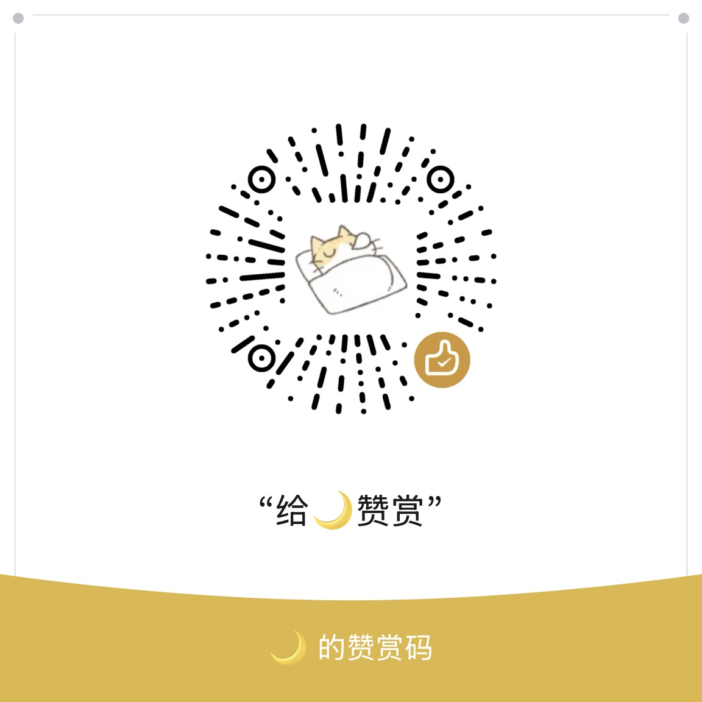

给小说作者的本地文本自查工具
系统预置词组和你添加的词组都会参与红色标记。预置内容也可以自由删除。
输入错误写法、正确写法和说明。系统预置内容也能编辑或删除。
内置完整成语字典用于识别四字成语的字序颠倒；易错释义词条会用蓝色标记，并显示释义和正确用法。搜索时可查阅完整字典词目。
依据 GB/T 15834—2011 补全可机械判断的明显错误；不检查多个问号、多个感叹号或“？！”等小说强调语气。规则支持修改、停用和删除。
修改后立即生效，并保存在当前浏览器。建议三类问题保持足够的颜色差异。
数据包为 JSON 文件，包含词组、错字词、成语、标点规则和标签颜色，不包含你的小说原文。
备份当前词组和颜色设置，方便换设备继续使用。
读取之前导出的 JSON 文件，并覆盖当前设置。
typos
punctuationRules

工具完全免费，赞赏出于自愿，不影响任何功能
功能反馈联系 QQ：2829426100